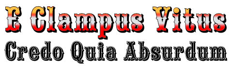

~ At Sonora California ~ May 2006 ~
-
-
The Ancient and Honorable Order of E Clampus Vitus is a historic organization dedicated to the study and preservation of the history of California and other western states, with a focus on mining history. Clampers, as they call themselves, are a benevolent lot and are dedicated to protecting Widders and Orphans... especially the Widders!
- The photos linked below were taken 20 May 2006 at ECV Grand Council in Sonora California. On that day, the Grand Council elevated Doc Maynard Outpost 54-40 from the Seattle, Washington area to FULL ECV Chapter status. Mazltov!
Grand Council ~ 20 May 2006 / 6011
Fred’s Photos:
ECV Hot Wheels
Portable Watering Hole, or, a Saloon in a Tent.
Dave Horton and Jim Perry
Beard (1), Jim “easy” Ley
Beard (2), Dan “tugboat” Kerege
Beard (3)
Beard (4), Roger
Beard (5), Kris “pig pen” Watters
Clamper Smile
Doc Maynard's Stage
Doc Maynard Crew
Full Moon
Chow Line
Chow Hall
Patty Smoot, the Biker Babe
Patty’s Photos:
Geegaw Hawker from Joaquin Murrieta, Chapter 13
Chow Line
Cynthia Bess, John & Angie Lynch
___, John Lynch
Jim & Katrina Perry
Angie Lynch, Katrina Perry, and Jackie Horton
Jim Perry and Fred Smoot
Buttons
Badges and Buttons
Clamper Vision
Patches
Signs of Our Times